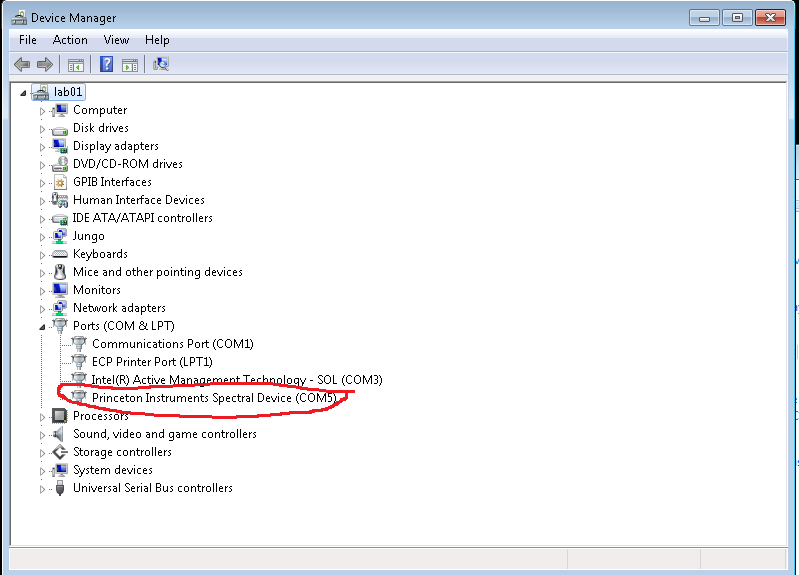
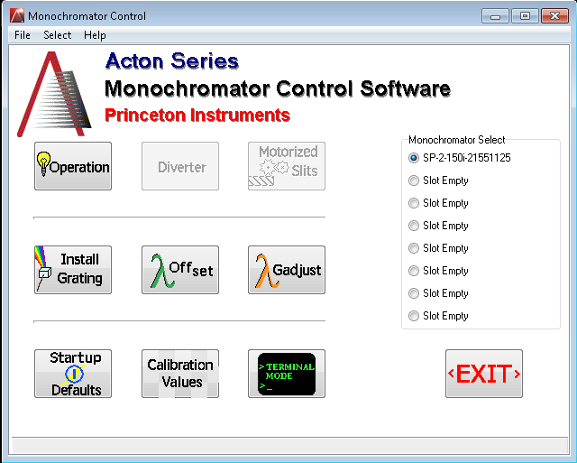

Controlling SP2150i monochromator with Python/PyVisa
Posted on Fri 19 September 2014 in Electronics
Monochromator is used in optics research where a narrow bandwidth of light is required to be illuminated on a sample. I work with Princeton Instruments Acton SP2150i and needed a python program to control it.
I found the manual here and on page 9-10, I saw the serial commands for various functions (such as changing filters, moving the grating, etc).
To control the instrument with my windows computer, I followed these steps:
1) Connect a usb cable between SP2150 and a computer
I used the port "USB" and not the "USB hub".
2) Installing the monochromator drivers and Monocontrol software:
Turned on the monochromator and when prompted, I Installed Princeton Instruments VCP drivers (version 2.08.08). These drivers should be in Acton Monochromator Control Software installation Disk. If the drivers are installed properly, you should see the monochromator as a Princeton Instruments Spectral device(COMx), in the device manager. x could be any number. 
Before attempting to control the instrument with python/pyvisa, I checked if the computer can communicate with monochromator using "MonoControl". See the installation instructions here . Monocontrol allows for control of monochromator which will open a windows like this:

If you cannot reach this stage, then there is some problem with drivers and need to be fixed before you can use python/pyvisa to control the instrument. Close this software if you want to use it with pyvisa.
3) Install NI-VISA runtime
I downloaded the exe from National Instruments and installed it. This should provide the required visa32.dll
4) Install python2.7 and Pyvisa
You can install pyvisa using Pip
5) Python code
I wrote a module that can be used to control the monochromator using pyvisa commands. The module provides a class definition and some high level functions.
For the line, self.m=instrument('COM7', timeout = 10), change 7 to the right com port number. The number should match the com port number shown in the device manager.
This module can be loaded into other python codes and the high level functions can be used to write even higher level functions (for example, see the code after if __name__ == __main__":).
The specifics of the code are valid for the set of filters,turrets and gratings I use in my instrument, but the program can be used for other cases with slight modifications.
Note: You can download the code from my github account
"""
@author: Bala Krishna Juluri
"""
from visa import *
import time
#assumes connected with USB. Drivers are installed. Needs pyvisa for communication.
# There is no need to use visa write command for SP2150. because all commands are ask type (you write something and get a confirmation back saying OK)
# filter 1 is no filter
# filter 2 is in 320 nm long pass filter
# filter 3 is 590 long pass filter cutoff
# filter 4 is 715 long pass filter
# filter 5 is 1250 long pass filter
#filter 6 is block
class SP2150i():
def __init__(self):
#self.m=instrument(get_instruments_list()[0])
try:
print get_instruments_list()
self.m=instrument('COM7', timeout = 10) #he default timeout is 5 sec, change the timeout if needed
except:
print "Check if monochromotor is connected to right COM port of instrument list (see control panel, hardward devices). Cannot connect to monochromator. Check connection. Check drivers"
def get_nm(self):
self.curr_nm=self.m.ask_for_values('?NM')
return self.curr_nm
def get_nm_per_min(self):
self.curr_nm_min=self.m.ask_for_values('?NM/MIN')
return self.curr_nm_min
def get_serial_model(self):
self.serial_no=self.m.ask_for_values('SERIAL')
self.model_no=self.m.ask_for_values('MODEL')
return self.serial_no,self.model_no
def goto_nm_max_speed(self,nm):
self.m.ask('%0.2f GOTO' % nm)
def get_turret(self):
self.turret=self.m.ask_for_values('?TURRET')
return self.turret
def get_filter(self):
self.filter=self.m.ask_for_values('?FILTER')
time.sleep(2)
return self.filter
def get_grating(self):
self.grating=self.m.ask_for_values('?GRATING')
return self.grating
def set_turret(self,num):
if num <=2:
self.m.ask(str(int(num))+ ' TURRET')
else:
print "There is not turret with this input"
def set_filter(self,num):
if num <=6:
self.m.ask(str(int(num))+ ' FILTER')
print "Filter changed and waiting with additional delay..."
time.sleep(1) # Additional delay, just in case.
print "Done waiting"
else:
print "There is no filter with this input"
def set_grating(self,num):
if num<=2:
self.m.ask(str(int(num))+ ' GRATING')
#time.sleep(5) # Additional delay, just in case
else:
print "There is no grating with this input"
def goto_nm_with_set_nm_per_min(self,nm,nm_per_min):
self.m.ask('%0.2f NM/MIN' % nm_per_min)
self.m.ask('%0.2f >NM' % nm)
char=0
while char!=1:
s=self.m.ask('MONO-?DONE')
char=int(s[2])
#print "Current wavelength is "+ self.m.ask('?NM')
time.sleep(.2)
print "Scan done?: "+'yes' if char == 1 else 'No'
self.m.ask('MONO-STOP')
return self.m.ask_for_values('?NM')
if __name__ == "__main__":
#This part of the codes uses the SP2150i class to do a wavelength scan
a=SP2150i()
print a.get_serial_model()
print a.get_grating()
print a.get_filter()
print a.get_nm_per_min()
print a.get_nm()
a.set_grating(2) # can only take 1 or 2 as input
start_wave=500
end_wave=1000
delta_wave=20
speed_nm_per_min=2000
a.set_filter(2) # this applies the 320 nm filter in the beginning
for i in xrange(start_wave,end_wave,delta_wave):
print "----------------------------"
print "Wavelength input is %0.2f nm" % i
wave=a.goto_nm_with_set_nm_per_min(i,speed_nm_per_min)
if i <= 370 and i+delta_wave >= 370:
a.set_filter(2)
if i <= 660 and i+delta_wave >= 660:
a.set_filter(3)
if i <= 775 and i+delta_wave >= 775:
a.set_filter(4)
if i <= 1300 and i+delta_wave >= 1300:
a.set_filter(5)
print "Wavelength output is "+str(wave[0])+ " nm"
print "----------------------------"
print "Resetting the monochromator to home position"
a.goto_nm_max_speed(400)
a.set_filter(1)
print "Position to home at " + str(a.get_nm()[0]) + " nm"+ ' and filter has been reset to ' + str(a.get_filter()[0])
print "Monochromator scan done. Have a nice day!"